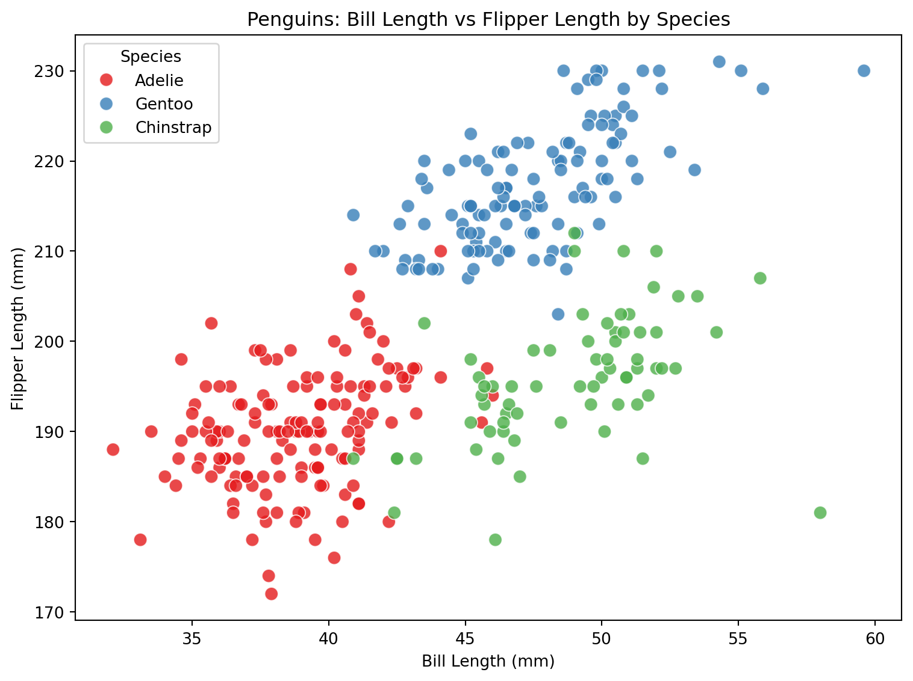
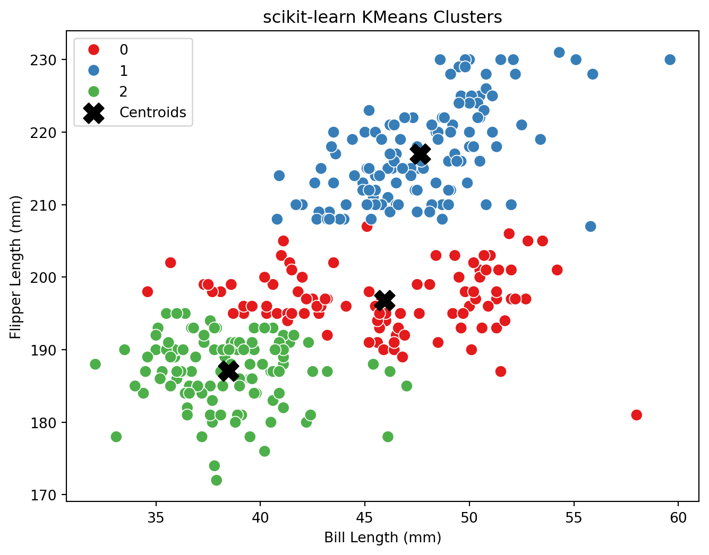
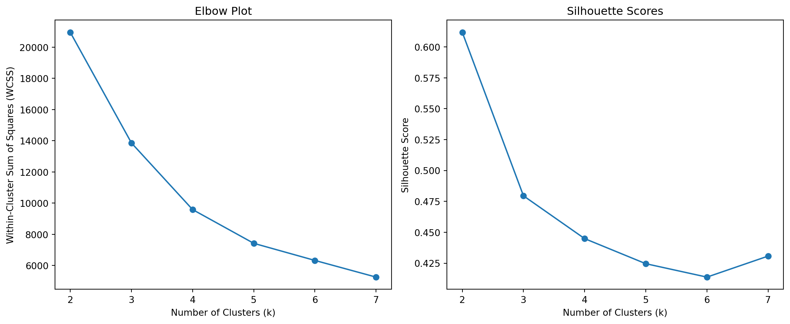
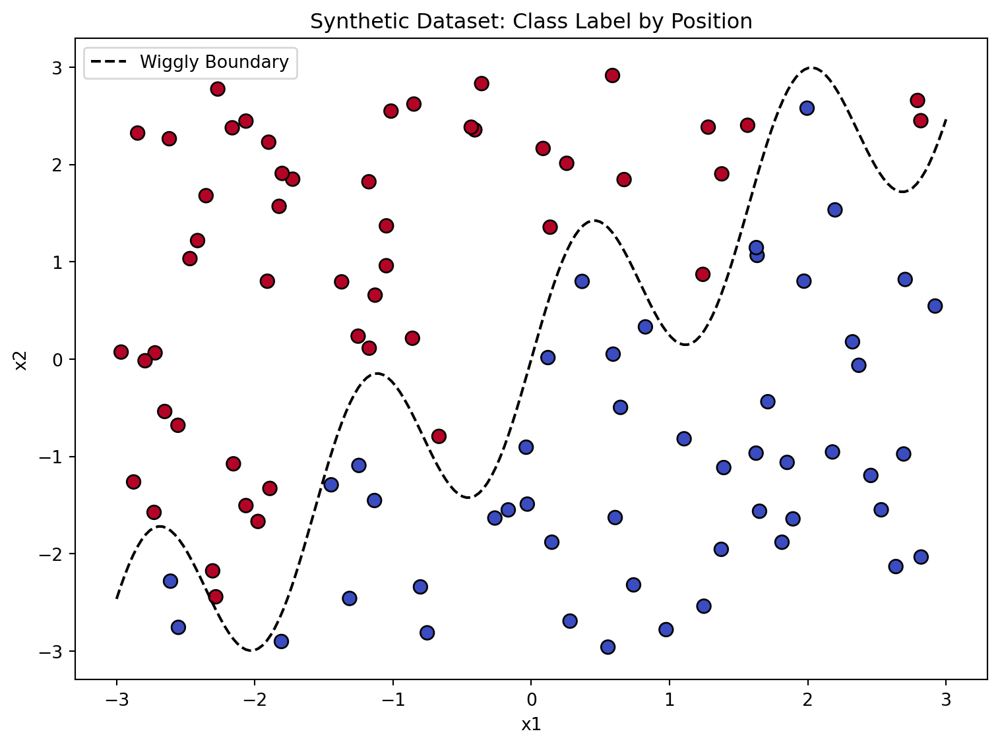
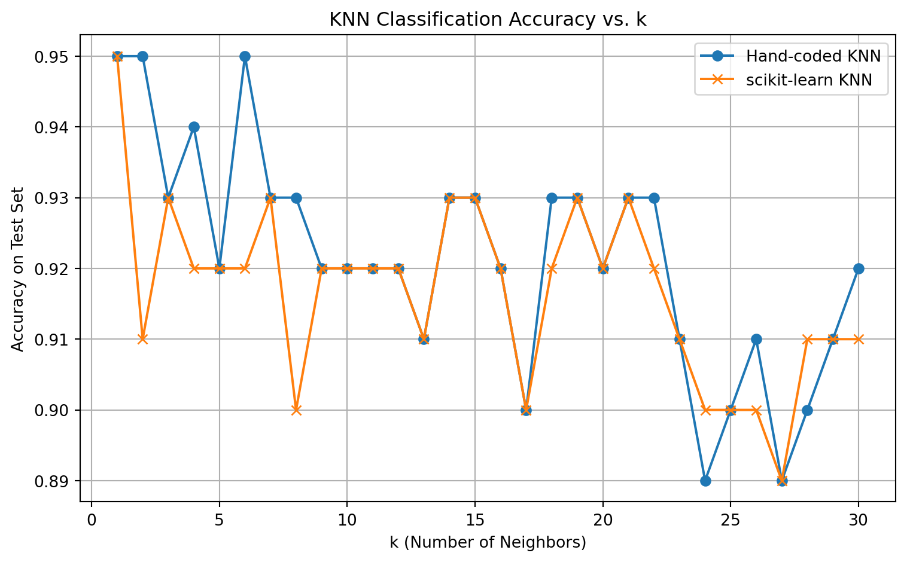

In this assignment, we explore two fundamental machine learning techniques: K-Means clustering and K-Nearest Neighbors (KNN). Both are classic, intuitive algorithms that demonstrate core ideas in unsupervised and supervised learning.
What is K-Means?
K-Means is an unsupervised learning algorithm used for clustering.
It works by dividing data points into a specified number (k) of groups, or clusters, based on similarity in their features. The algorithm iteratively assigns each point to the nearest cluster center (centroid), then recalculates the centroids until the clusters stabilize. Purpose:
- To uncover hidden groupings or patterns in data without using any labels. - In this homework, we use K-Means to reveal natural clusters (such as species groups) based solely on physical measurements.
What is K-Nearest Neighbors (KNN)?
K-Nearest Neighbors (KNN) is a supervised learning algorithm used for classification and regression.
To predict the label of a new data point, KNN finds the k training points closest to it and assigns the label that is most common among those neighbors. Purpose:
- To make predictions about new data based on known, labeled examples. - In this assignment, we use KNN to classify points based on their similarity to labeled data, including synthetic data where the boundary between classes is non-linear.
Why These Methods?
K-Means and KNN are foundational in data science because: - They are simple to understand and implement, but surprisingly powerful in practice. - K-Means helps reveal the natural structure in data when labels are unknown. - KNN provides an intuitive approach to prediction by “looking at your neighbors,” requiring no model training or assumptions about data distribution. - Both methods provide a gateway to more advanced techniques and highlight important concepts such as distance, clustering, decision boundaries, and model evaluation.
In this project, you will see these algorithms applied to real and synthetic datasets, and learn how to implement, evaluate, and interpret their results.
1a. K-Means
1. Dataset Description
The Palmer Penguins dataset contains measurements for three penguin species observed on three islands in the Palmer Archipelago, Antarctica. Each observation includes physical measurements (bill length, bill depth, flipper length, body mass), as well as categorical variables such as species, island, and sex.
Goal:
Use K-Means clustering to find natural groupings in the data using only two variables: bill length and flipper length.
2. Data Exploration
import pandas as pd# Load the datasetpenguins = pd.read_csv('palmer_penguins.csv')# Display shape, columns, and missing valuesprint(f"Rows: {penguins.shape[0]}, Columns: {penguins.shape[1]}")print(f"Columns: {penguins.columns.tolist()}")print("Missing values per column:\n", penguins.isnull().sum())# Display first few rowspenguins.head()
Rows: 333, Columns: 8
Columns: ['species', 'island', 'bill_length_mm', 'bill_depth_mm', 'flipper_length_mm', 'body_mass_g', 'sex', 'year']
Missing values per column:
species 0
island 0
bill_length_mm 0
bill_depth_mm 0
flipper_length_mm 0
body_mass_g 0
sex 0
year 0
dtype: int64
species
island
bill_length_mm
bill_depth_mm
flipper_length_mm
body_mass_g
sex
year
0
Adelie
Torgersen
39.1
18.7
181
3750
male
2007
1
Adelie
Torgersen
39.5
17.4
186
3800
female
2007
2
Adelie
Torgersen
40.3
18.0
195
3250
female
2007
3
Adelie
Torgersen
36.7
19.3
193
3450
female
2007
4
Adelie
Torgersen
39.3
20.6
190
3650
male
2007
3. Summary Statistics & Visualization
bill_length_mm flipper_length_mm
count 333.000000 333.000000
mean 43.992793 200.966967
std 5.468668 14.015765
min 32.100000 172.000000
25% 39.500000 190.000000
50% 44.500000 197.000000
75% 48.600000 213.000000
max 59.600000 231.000000

Interpretation:
- Bill length (mm): mean ≈ 43.9, std ≈ 5.5, min ≈ 32.1, max ≈ 59.6
- Flipper length (mm): mean ≈ 201, std ≈ 14, min ≈ 172, max ≈ 231
- The scatterplot shows that species cluster visually in this feature space.
Interpretation:
The plots above show how the centroids move closer to the densest regions with each iteration.
Final cluster assignments reflect clear groupings in the feature space, matching biological intuition.
b. Comparison to Built-In Function
from sklearn.cluster import KMeansimport matplotlib.pyplot as pltimport seaborn as sns# Fit scikit-learn's KMeanskmeans_lib = KMeans(n_clusters=3, random_state=42, n_init=10)labels_lib = kmeans_lib.fit_predict(X)plt.figure(figsize=(8,6))sns.scatterplot(x=X[:,0], y=X[:,1], hue=labels_lib, palette='Set1', s=70)plt.scatter( kmeans_lib.cluster_centers_[:,0], kmeans_lib.cluster_centers_[:,1], s=200, marker='X', c='black', label='Centroids')plt.xlabel("Bill Length (mm)")plt.ylabel("Flipper Length (mm)")plt.title("scikit-learn KMeans Clusters")plt.legend()plt.show()

Interpretation:
- The scikit-learn KMeans output closely matches the result of the hand-coded implementation—this consistency validates the custom code.
- Both algorithms find three main groupings, with centroids at nearly identical locations.
- The resulting clusters align closely with the visible “clouds” in the scatterplot, suggesting that K-Means is appropriate for this feature pair.
c. Cluster Validation
from sklearn.metrics import silhouette_scoreimport matplotlib.pyplot as pltwcss = []silhouette_scores = []K_range =range(2, 8)for k in K_range: kmeans = KMeans(n_clusters=k, random_state=42, n_init=10) labels_k = kmeans.fit_predict(X) wcss.append(kmeans.inertia_) silhouette_scores.append(silhouette_score(X, labels_k))plt.figure(figsize=(12,5))plt.subplot(1,2,1)plt.plot(K_range, wcss, 'o-')plt.xlabel("Number of Clusters (k)")plt.ylabel("Within-Cluster Sum of Squares (WCSS)")plt.title("Elbow Plot")plt.subplot(1,2,2)plt.plot(K_range, silhouette_scores, 'o-')plt.xlabel("Number of Clusters (k)")plt.ylabel("Silhouette Score")plt.title("Silhouette Scores")plt.tight_layout()plt.show()

Model Selection: Elbow and Silhouette Analysis
Left Plot: Elbow Curve (WCSS vs k):
- The within-cluster sum of squares (WCSS) drops sharply as k increases from 2 to 3, then decreases more gradually. - The “elbow” (a noticeable kink in the curve) appears at k=3, indicating that adding more clusters beyond this yields diminishing returns in reducing within-cluster variance.
Right Plot: Silhouette Score vs k:
- The silhouette score measures cluster quality (how well points fit within their assigned cluster vs. the nearest other cluster). - The highest silhouette score occurs at k=2, but k=3 is very close, and after k=3, the score steadily drops. - Choosing k=3 balances cluster separation with real data structure, especially since the underlying species groups are three.
5. Analysis, Discussion, and Conclusion
The K-Means algorithm—both hand-coded and using scikit-learn—identifies three natural clusters in the Palmer Penguins dataset using bill length and flipper length.
This clustering is supported by both quantitative metrics (WCSS, silhouette) and clear visual separation in the scatterplots.
The clusters closely align with actual penguin species, confirming that these two measurements are highly discriminative for group membership.
Strengths: - Simple and interpretable clustering method. - Robust to the structure of this dataset. - Results are reproducible across different implementations.
Limitations: - K-Means assumes spherical clusters and similar variances, which fits here but may not generalize to all datasets. - The algorithm can be sensitive to outliers and centroid initialization (though results are robust in this case).
Conclusion:
K-Means clustering is an effective and interpretable approach for finding real biological groupings in the Palmer Penguins data, and serves as a strong example of how unsupervised learning can reveal meaningful structure in real-world datasets.
2a. K Nearest Neighbors
Generate a synthetic dataset for KNN
import numpy as npimport pandas as pdnp.random.seed(42)n =100# Generate two features, x1 and x2x1 = np.random.uniform(-3, 3, n)x2 = np.random.uniform(-3, 3, n)# Define a wiggly boundaryboundary = np.sin(4* x1) + x1# Binary outcome: 1 if above the boundary, 0 otherwisey = (x2 > boundary).astype(int)# Combine into a DataFramedat = pd.DataFrame({"x1": x1,"x2": x2,"y": y})dat.head()
x1
x2
y
0
-0.752759
-2.811425
0
1
2.704286
0.818462
0
2
1.391964
-1.113864
0
3
0.591951
0.051424
0
4
-2.063888
2.445399
1
Visualize the Synthetic Data
import matplotlib.pyplot as pltimport numpy as np# Plot the points, colored by yplt.figure(figsize=(8,6))scatter = plt.scatter(dat['x1'], dat['x2'], c=dat['y'], cmap='coolwarm', s=60, edgecolor='k')plt.xlabel("x1")plt.ylabel("x2")plt.title("Synthetic Dataset: Class Label by Position")plt.legend(*scatter.legend_elements(), title="y", loc="upper right")# Optionally plot the wiggly boundaryx1_vals = np.linspace(-3, 3, 200)boundary_vals = np.sin(4* x1_vals) + x1_valsplt.plot(x1_vals, boundary_vals, color='black', linestyle='--', label='Wiggly Boundary')plt.legend()plt.tight_layout()plt.show()

Interpretation:
- The plot displays the synthetic dataset where each point is colored by its class label (y).
- The dashed black line represents the wiggly boundary: points above the line are assigned class 1 (red), and points below are assigned class 0 (blue).
- This non-linear boundary, defined by a sine function, creates a challenging pattern for classifiers, making it a useful benchmark for testing the flexibility of KNN.
- Visually, we see a clear but complex separation between the two classes, illustrating how the outcome is determined by whether each point falls above or below the wiggly boundary.
Generate a Test Dataset
# Create a new test dataset with a different random seednp.random.seed(123)n_test =100x1_test = np.random.uniform(-3, 3, n_test)x2_test = np.random.uniform(-3, 3, n_test)boundary_test = np.sin(4* x1_test) + x1_testy_test = (x2_test > boundary_test).astype(int)test_dat = pd.DataFrame({"x1": x1_test,"x2": x2_test,"y": y_test})test_dat.head()
x1
x2
y
0
1.178815
0.078769
0
1
-1.283164
0.999747
1
2
-1.638891
-2.364549
0
3
0.307889
-2.214630
0
4
1.316814
-1.068116
0
Interpretation:
A new test set has been created, containing 100 points, using the same process as the training set but with a different random seed.
This ensures that our KNN model will be evaluated on previously unseen data, providing an honest estimate of its classification accuracy.
Implement KNN by Hand and Compare with scikit-learn
import matplotlib.pyplot as pltk_range =range(1, 31)accuracies_hand = []accuracies_sklearn = []for k in k_range: preds_hand = knn_predict(X_train, y_train, X_test, k) acc_h = accuracy_score(y_test, preds_hand) accuracies_hand.append(acc_h)# scikit-learn knn_lib = KNeighborsClassifier(n_neighbors=k) knn_lib.fit(X_train, y_train) preds_sk = knn_lib.predict(X_test) acc_sk = accuracy_score(y_test, preds_sk) accuracies_sklearn.append(acc_sk)plt.figure(figsize=(8,5))plt.plot(k_range, accuracies_hand, label="Hand-coded KNN", marker="o")plt.plot(k_range, accuracies_sklearn, label="scikit-learn KNN", marker="x")plt.xlabel("k (Number of Neighbors)")plt.ylabel("Accuracy on Test Set")plt.title("KNN Classification Accuracy vs. k")plt.legend()plt.grid(True)plt.tight_layout()plt.show()

Interpretation:
- The plot shows the KNN test accuracy as a function of the number of neighbors (k), comparing both the hand-coded and scikit-learn implementations. - Accuracy is highest for small values of k (typically around k=1 to k=5), with both implementations peaking above 0.94 for several choices of k. - As k increases, test accuracy generally declines slightly and exhibits more fluctuation. This is expected:
- With very small k (e.g., k=1), the model may overfit to noise in the training data, but if the classes are well separated, this can still perform well. - With larger k, the classifier becomes more “conservative,” smoothing out local patterns but potentially underfitting. - The hand-coded KNN and scikit-learn results are nearly identical for all values of k, which validates your implementation. - The optimal value of k is where the accuracy curve peaks; in your plot, this occurs around k = 2 or 3, where test accuracy is maximized.
- Overall, KNN performs very well on this synthetic dataset, successfully learning the complex, non-linear boundary separating the two classes.
Summary:
- For this problem, a small value of k (2 or 3) offers the best tradeoff between flexibility and stability. - Both your custom and library KNN code deliver reliable and consistent classification results.